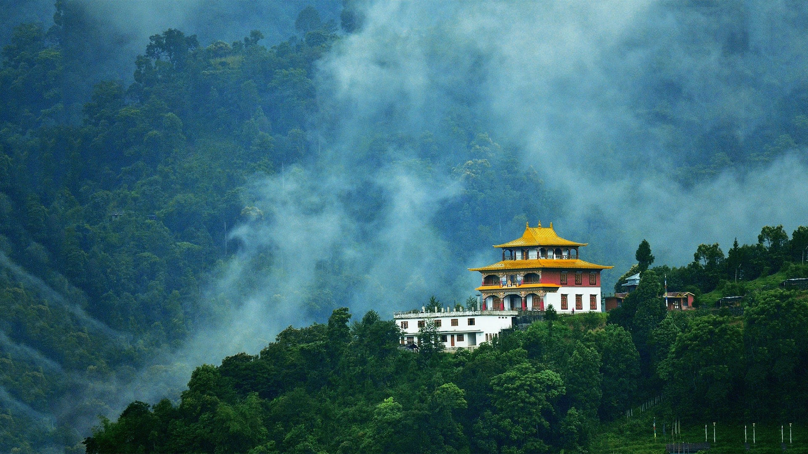

Tours & Travaels
Amazing Place In The World
16 January,2023

Darjeeling Bengali is a town and municipality in the northernmost region of the Indian state of West Bengal. Located in the Eastern Himalayas, it has an average elevation of 2,045 metres (6,709 ft).
Ladakh is a region administered by India as a union territory which constitutes a part of the larger Kashmir region and has been the subject of dispute between India, Pakistan, and China since 1947.[
Kedarnath is a town and Nagar Panchayat in Rudraprayag district of Uttarakhand, India, known primarily for the Kedarnath Temple.
Climate and environment Toggle Climate and environment subsection Flora and fauna Demographics Governance Economy Toggle Economy subsection Utilities Transport Culture Toggle Culture subsection Education Notable people Explanatory notes References Left to right from top: Darjeeling with Kangchenjunga, the world's third-highest mountain, rising behind it; a Darjeeling Himalayan Railway train steaming to the main train station; a tea garden, or tea plantation MapWikimedia | © OpenStreetMap Interactive map of Darjeeling Coordinates: 27°02′15″N 88°15′47″ECoordinates: 27°02′15″N 88°15′47″E Country India State West Bengal District Darjeeling Settled Leased in 1835 from Tsugphud Namgyal, the Chogyal of the Kingdom of Sikkim, and annexed in 1849.[1][2][3] Municipality, 1 July 1850.[4][5] Founded by British East India Company, during Company rule in India[6][7] Government
History Toggle History subsection Geography Toggle Geography subsection Administration Toggle Administration subsection Eco Article Talk Read View source View history Government • Body Administration of Ladakh • Lieutenant Governor B. D. Mishra • Member of Parliament Jamyang Tsering Namgyal (BJP) • High Court High Court of Jammu and Kashmir and Ladakh Area[7][a] • Total 59,146 km2 (22,836 sq mi) Highest elevation (Saltoro Kangri[8]) 7,742 m (25,400 ft) Lowest elevation (Indus River) 2,550 m (8,370 ft) Population (2011) • Total 274,289 • Density 4.6/km2 (12/sq mi) Demonym Ladakhi Languages • Official Hindi and English[9] • Spoken Ladakhi, Urdu, Purgi, Brokskat and Balti Time zone UTC+05:30 (IST) ISO 3166 code IN-LA Vehicle registration LA[10] Website ladakh.nic Karakoram range to the north to the main Great Himalayas to the south.[12][13] The eastern end, consisting of the uninhabited Aksai Chin plains, is claimed by the Indian Government as part of Ladakh.
History Kedarnath is a town and Nagar Panchayat in Rudraprayag district of Uttarakhand, India, known primarily for the Kedarnath Temple. It is approximately 86 kilometres from Rudraprayag, the district headquarter. Kedarnath is the most remote of the four Chota Char Dham pilgrimage sites. It is located in the Himalayas, about 3,583 m (11,755 ft) above sea level near the Chorabari Glacier, which is the source of the Mandakini river. The town is flanked by snow-capped peaks, most prominently the Kedarnath Mountain. The nearest road head is at Gaurikund about 16 km away. The town suffered extensive destruction during June 2013 from the Flash Floods caused by torrential rains in Uttarakhand state.[4]